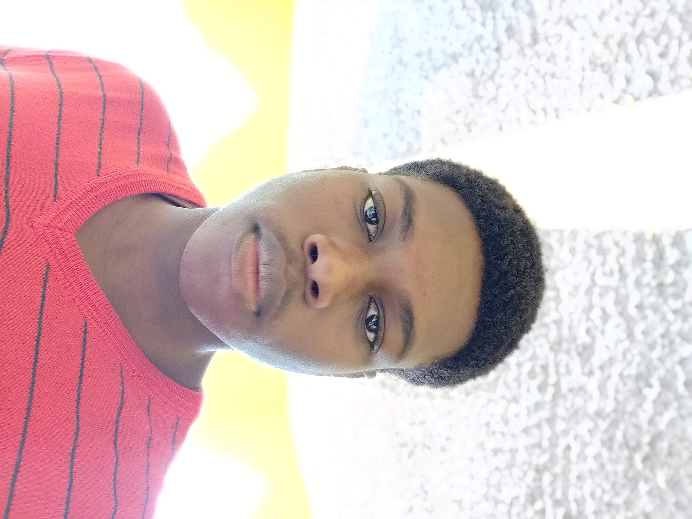

Home | My CV | Personal Development | About Me | Reference | StoryBoard

Deiondre Emanuel| PROFESSIONAL MISSION STATMENT:I want to be a member of a company that employs software developers so that Imay use my knowledge, abilities, and experience to contribute to efficiency and professional excellence while also continuing to learn more over time from a variety of settings and circumstances. In order to accomplish this goal I will first achieve a bachelors degree at my current institution of attendance at the University of Technology. Only then will I be able to fullfil my life long vision. EDUCATION AND QUALIIFICATIONS:
TECHNICAL EXPERIENCE:Languages: C, C++, JAVA, HTMLPlatforms: Windows 10, Windows 11, Linux Concepts: Networking, Programming ABILITIES:Skill Level : MS Word, MS Excel, Power point, AccessPracticed : More than 3 years PERSONAL SKILLS:1.Honesty2.Team Spirit 3.Accepting Challenges LANGUAGES:EnglishINTEREST:1.Internet browsing2.Reading books REFERENCE:Will be provided on demand |